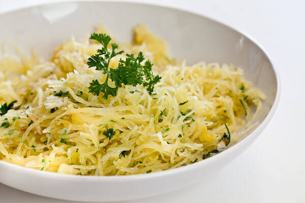

How To Roast Spaghetti Squash
Note: If you really, really don’t want to slice the squash in half, rest assured you can roast squash whole (just pierce it with a few knife cuts first). I prefer to slice it in half for a couple reasons: 1) I season the squash before roasting and the flavour infuses as it roasts, and 2) It cooks in a fraction of the time – often ~20 minutes faster compared to roasting it whole. However, roasting it whole is a nice option if you have a really big squash and a dull knife!
How I Roast Spaghetti Squash:
- Preheat the oven to 375F. If your squash is quite large, start by slicing off the stem. This makes it easier to slice through and also gives you a flat base to work with. You can do this on a cutting board or an old tea towel.
- Place squash flat end down. With a [recently sharpened] chef’s knife, slice down the middle lengthwise. I like to use a “rocking” motion to cut through. This big squash was challenging, but a slow and steady pace eventually won the race…or something like that.
- With a metal ice cream scoop (my Zyliss scoop works amazing for this!) or spoon, scoop out the seeds & guts. Set aside seeds if you plan to roast them later. And you will, right?
- Brush halves with a tiny amount of olive oil (I used maybe 1/2 tsp oil on each). Sprinkle with Herbamare (or sea salt) and freshly ground black pepper. Place on a baking sheet lined with parchment paper, cut side down. The salt & pepper you just sprinkled on will stick to the oil.
- Roast at 375F for around 35-45 minutes, or until you can easily scrape strands away from the squash. The outer yellow skin will also deepen in colour. Baking time will vary depending on the size. My 5-pound squash took 40 minutes.
- Remove from oven and flip each half. At this point, feel free to use the fork to see if the strands easily come off. If it’s ready, cool for about 5-10 minutes and then grab the fork and scrape the squash flesh over and over. You’ll be left with a bunch of spaghetti-like strands! Season again and serve immediately – in the shell if you wish.
Something as simple as salt, pepper, marinara, dried basil, and garlic powder is a fantastic combo. I could eat this every. single. day.
I also love to serve homemade chili or stew on top.
Or in this case, creamy avocado sauce.
